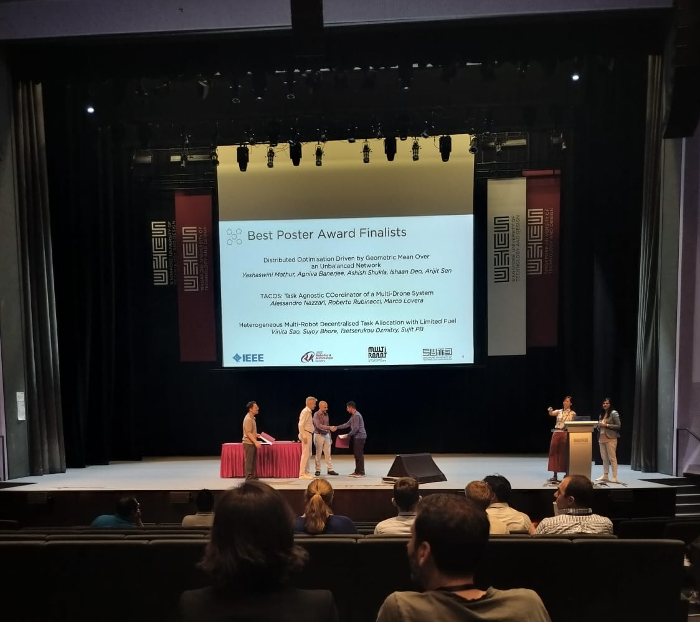
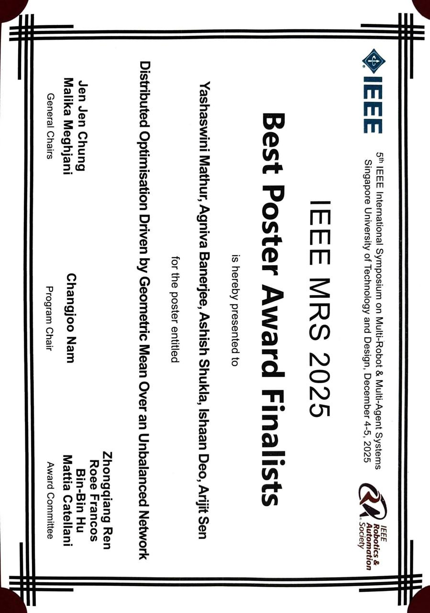
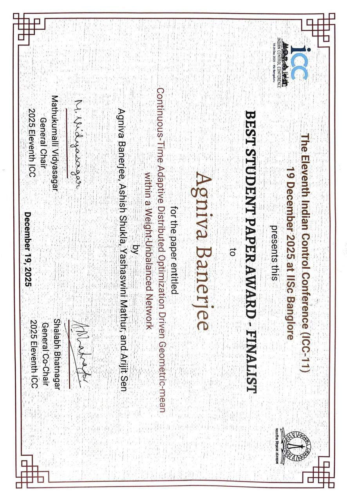
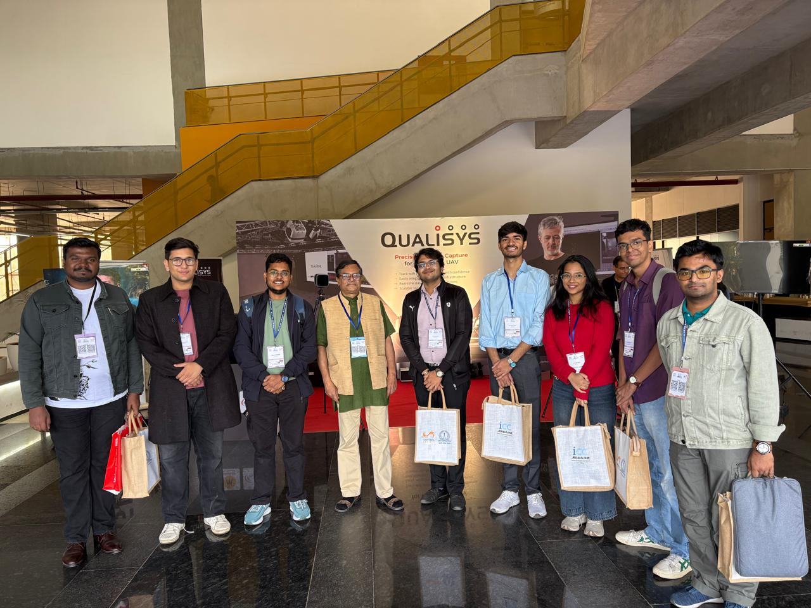
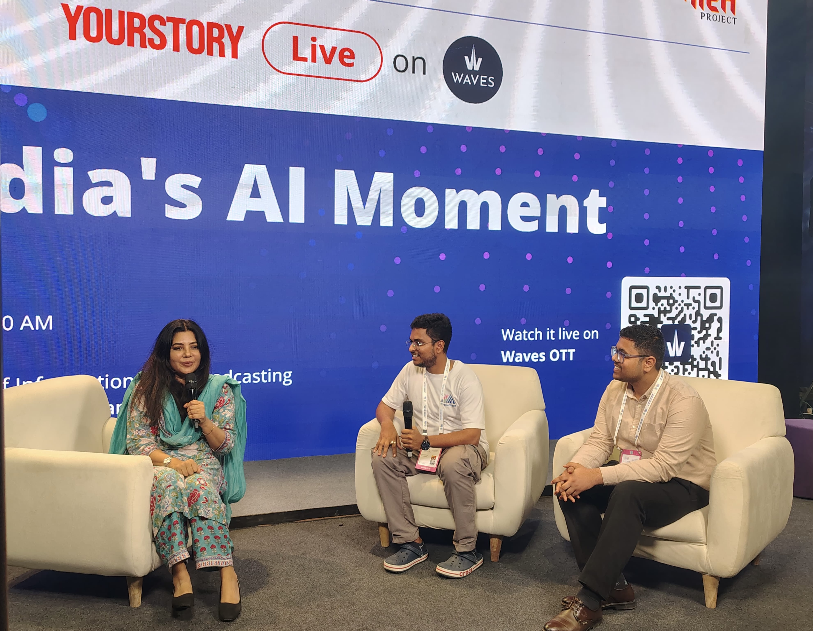

Short Bio
Agniva Banerjee is a Visvesvaraya Fellow in Electrical Engineering and Computer Science at the Indian Institute of Science Education and Research Bhopal. He received his Bachelor of Science in Mathematics from Ramakrishna Mission Vivekananda Centenary College in 2022 and his Master of Science in Applied Mathematics from the Indian Institute of Engineering Science and Technology, Shibpur in 2024. He is currently pursuing his Ph.D. under the supervision of Dr. Arijit Sen and Prof. Sujit P.B., supported by the Visvesvaraya Ph.D. Scheme. His research lies at the intersection of control theory, optimization, reinforcement learning, and robotics, with a primary focus on learning-enabled control for autonomous vehicles and heterogeneous multi-agent systems. His work integrates model predictive control with reinforcement learning to develop safe and scalable control architectures.
News
- 2026 Appointed as Techincal Student member for IEEE RAS Technical Comittee on Machine Learning for Automation
- 2026 Selected for the Qualification Round of ISRO Robotic Challenge IRoC-U 2026
- 2026 Got a summer research internship offer from TCS Research, Bangalore Section
- 2025 Selected for the Dr. A.P.J. Abdul Kalam Young Research Fellowship 2024
- 2025 Received the Best Paper runner-up Award at the 2025 Eleventh Indian Control Conference (ICC)
- 2025 Received the Best Poster runner-up Award at the IEEE MRS 2025
Publications
Full list on Google Scholar.
-
Continuous-Time Adaptive Distributed Optimization Driven Geometric-mean within a Weight-Unbalanced Network
2025 Eleventh Indian Control Conference (ICC), 2025
-
SHIELD: Safe Hybrid Integration of PPO and MPC for Reliable Trajectory Tracking of Autonomous Ground Vehicles
RITA 2025, accepted for oral presentation
-
TRaCe: Trajectory Tracking with Budgeted Localization using Meta-Reinforced Learning and Belief-Aware MPC
RITA 2025, accepted for oral presentation
-
Fusing Time-Domain and Constellation Views: A Multi-modal MAE for Wireless Signals
AAAI-25 Student Abstract and Poster Program, 2025
-
Distributed Optimization Driven by Geometric Mean over an Unbalanced Network
IEEE MRS 2025, accepted for poster presentation
-
Experimental Evaluation of Multi-Agent Consensus Protocols Using Aerial Swarms
18th International Conference on Agents and Artificial Intelligence
-
On Visual Saliency Maps for Identifying Fidelity of Deepfake Detection Datasets
BMVC workshop 2025
-
Quantum-enhanced machine learning for precision breast cancer diagnosis
17th International Conference on COMmunication Systems and NETworks (COMSNETS)
Experience
- 2023 - 2024 Dissertation at Indian Institute of Science Education and Research Bhopal.
- 2022 - 2023 Internship at Indian Statistical Institute, Kolkata.
- 2022 - 2023 Internship at Harish-Chandra Research Institute.
- 2021 - 2022 Internship at Indian Institute of Technology Ropar.
Gallery







